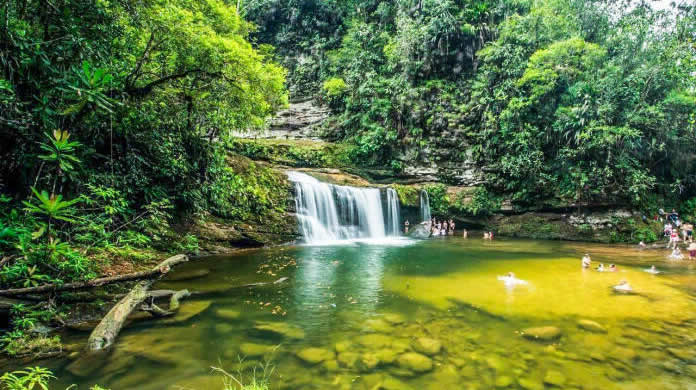

Putumayo, Colombia

Putumayo
Located in the south of Colombia, Putumayo is a department full of lush jungles, majestic rivers, and a vibrant culture that blends Indigenous, Afro-descendant, and mestizo roots. Known as the "gateway to the Colombian Amazon," this region is home to Indigenous communities such as the Kofán, Inga, and Siona, who have preserved their ancestral wisdom and deep connection with nature.